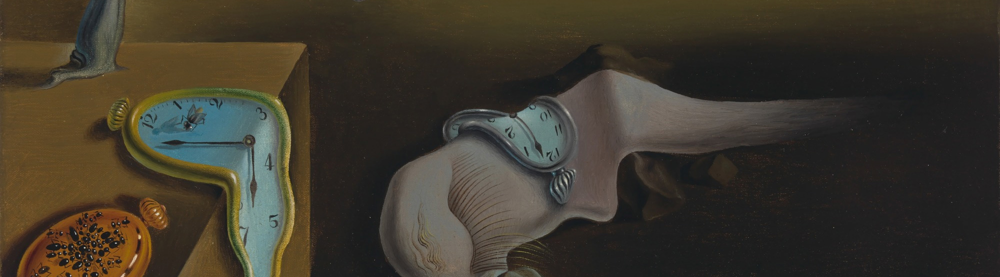
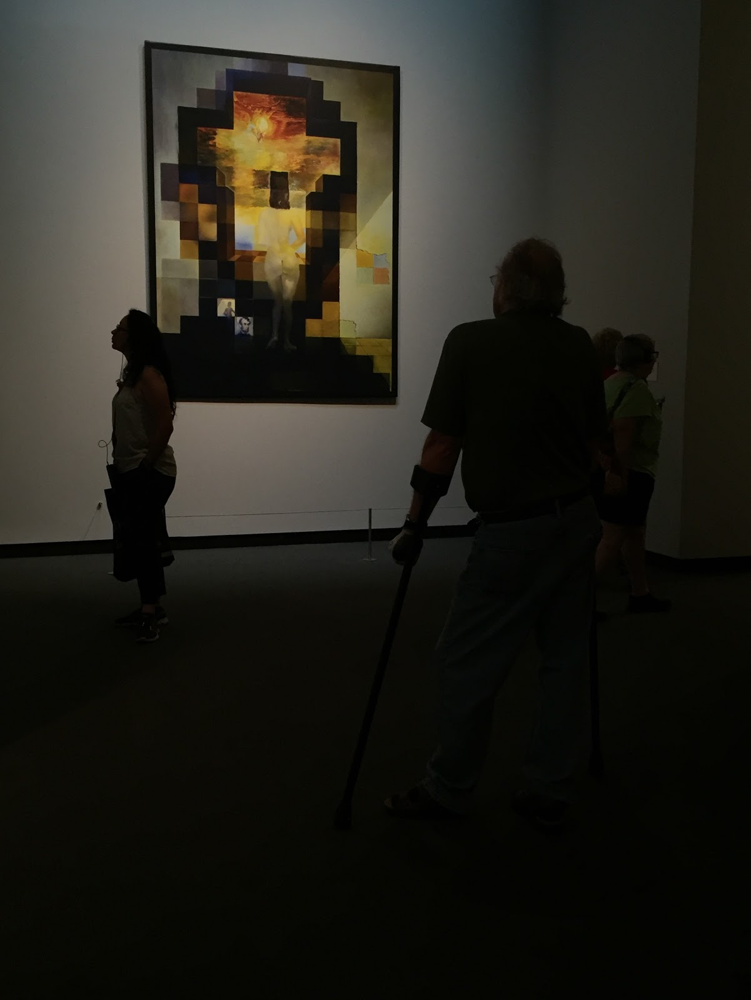

Welcome to my website!
Woo-hoo!!! This means that my software development journey has officially started!
It took me several years to realize that building tech products and solving problems programmatically is what really inspires me but I am here now and here is what I am going to do!
As engineers, we need to dream, imagine, generate ideas of items that need to be improved or do not even exist.
I really like the comparison mentioned during the Flatiron prework between the Git Version Control and oil paint the invention of which allowed artists to experiment with colors. Being able to create and test your idea over and over allows you to really create something that is going to fulfill its true purpose!
As programmers, we start with an idea, and with the help of technology bring it into existence. We get to witness letters of code materialize into tangible items. One day we are architects measuring the foundation for our project The next day we are the interior designers th
Look at this art by Salvador Dali in his museum in Figueras, Spain. From afar it looks like a picture of President Lincoln. If you come closer or hover over the picture, though, you will see the smaller details that comprise this picture. The main one there is the naked silhouette of Dali's wife, Gala, contemplating the Mediterranean Sea. That is actually exactly what this art piece is called.
Like Dali and many other artists, I want to convey my thoughts to the world through my work and I think that being a software developer gives you a lot of great opportunities to create, to listen to others and to make your voice heard!